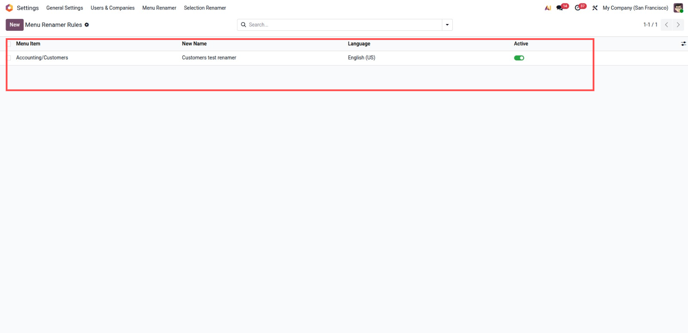
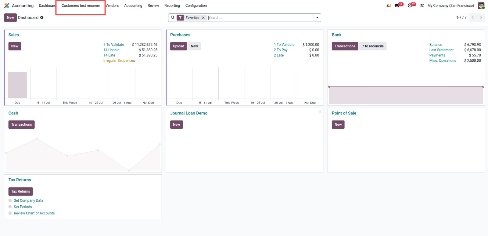

Rename apps and menu items anywhere in the backend from a simple configuration list. No development, no XML, no Studio.
Pick the menu from a list showing the full menu path, so two menus with the same name can never be mixed up.
Rename a menu in one language without affecting the other languages. Leave the language empty to apply the rule everywhere.
Works with menus coming from standard Odoo apps and from any custom or third party module installed in the database.
Rules are applied on the fly when menus are loaded. Original menu names and translations are never modified, so uninstalling restores everything.
A dedicated Menu Renamer Manager group controls who can create and modify rename rules. Administrators get access automatically.

Create a rule from Settings, Menu Renamer. The highlighted row shows the exact menu item Accounting/Customers, the new menu label Customers test renamer, the target language English (US), and the active toggle.

After refreshing the browser, the highlighted Accounting menu displays Customers test renamer instead of the original Customers label. The original menu record is not modified, so disabling or deleting the rule restores the standard menu name.
1. Install the module and assign the Menu Renamer Manager group to your user if needed.
2. Go to Settings, Menu Renamer.
3. Create a rule: pick the exact menu item, for example Accounting/Customers.
4. Type the new menu label, for example Customers test renamer.
5. Optionally pick a language for language specific renaming.
6. Refresh the browser. The new menu name is applied everywhere.
7. Archive or delete a rule to restore the original menu name.
This module is published under Odoo Proprietary License v1.0 (OPL-1).